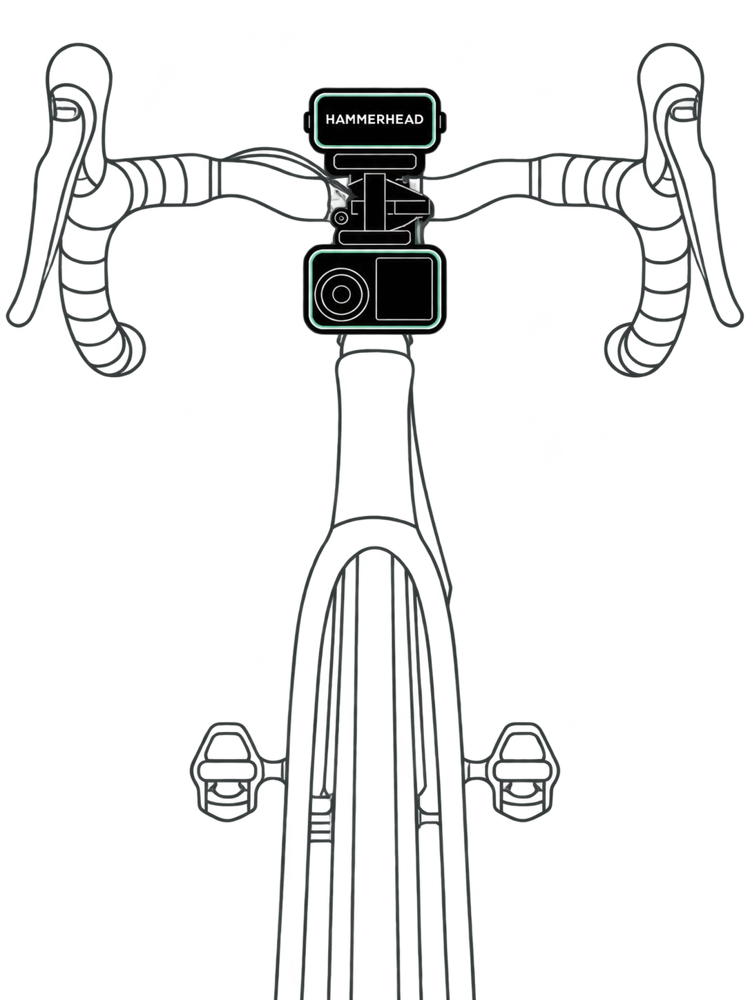

In-ride camera control
Start and stop recordings and take photos from Karoo data fields.
AeroCam turns your Hammerhead Karoo into a remote for your DJI Osmo Action. Record, shoot, and highlight the best moments of the ride — while the camera stays mounted and your hands stay on the bars.
GPL-3.0 licensed
Independent project — not affiliated with or endorsed by DJI or Hammerhead.

AeroCamStay focussed on your ride, not your camera.
Start and stop recordings and take photos from Karoo data fields.
Choose a small recording button or a full-page control widget, depending on how you like to use your ride screen.
Preparing for a ride is tedious enough. AeroCam reconnects automatically after you turn the camera on.
Peak power, max speed, summit, zone-5 heart rate: AeroCam adds a highlight to the recording the moment it happens. That way, when you watch the footage back, you can immediately find the highlights.
Osmo cameras can't be woken remotely once they power off. AeroCam's workaround keeps the camera in a semi-standby mode, so you can leave it mounted without worrying about it during the ride.
AeroCam streams live Karoo GPS data to the camera, including position, altitude, and velocity. You can then overlay that data onto the video using the DJI app or other external apps.
The expensive part of ride video isn't recording it — it's finding the eight seconds worth keeping in two hours of footage. Highlights solve that: they are markers inside the recording, so in the edit you jump from moment to moment instead of scrubbing through the whole file.
AeroCam sets those markers for you. It watches your ride data — power, speed, heart rate, laps, climbs — and adds a highlight the moment a threshold you defined is crossed.
AeroCam can even automatically start recording when a trigger occurs. Combined with the prevent standby feature, this lets you leave the camera mounted for up to four hours and automatically record the highlights of your ride.
Adds a highlight when Karoo records a new lap.
Adds a highlight when your power crosses the configured wattage.
Adds a highlight when your speed crosses the configured threshold.
Adds a highlight when you reach the summit of a climb in your active route.
Adds a highlight when your heart rate crosses the configured threshold.
Adds a highlight when you exceed the configured speed while descending.
Adds a highlight at the start and end of a ride when the camera is recording.
Your DJI camera automatically turns off after a period of inactivity, typically five minutes, even with a remote connected. AeroCam can prevent this with a modest battery cost, so you can leave the camera mounted without turning it on and off during a ride.
Based on a 2,100 mAh battery. Usage may vary.
On your phone, open AeroCam releases, long-press the APK download link, and share it with the Hammerhead Companion App. Tap Install on your Karoo. This method requires the latest-generation Karoo connected to Wi-Fi. See Hammerhead’s guide and requirements.
Open AeroCam and follow the onboarding tutorial to pair your camera and apply the recommended camera settings.
Add AeroCam data fields to your ride screens. They come in different sizes and options, so you can find what works best for you.
AeroCam started with a practical need: controlling a mounted camera from the Karoo. Different ideas were mocked up in Figma and implemented by large language models. Human direction shaped the interface for ease of use, with experiments and daily use on real Karoo and Osmo hardware guiding the result.
Did AeroCam help you? A GitHub star is the only usage signal an open-source project gets — and it takes one click.